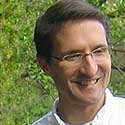
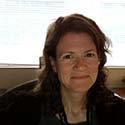

Research Interests: My research interests are in the formal and informal educational applications of real-time or near real-time data (RTD) and ocean observatory systems in science education. My primary focus is on curriculum development using RTD to teach science concepts in the K-16 level and I am most interested in estuarine habitats and how the use of RTD affects ocean literacy.
Research Interests: Brendan Callahan is an Assistant Professor of Biology Education. His research interests include science epistemology (ways of thinking) and science literacy, particularly in the context of debating socioscientific issues (SSI) in the secondary science setting. SSI are contentious issues in today's society that have both a scientific aspect as well as a moral or ethical component. His research focuses on the potential benefits to epistemological development, science content knowledge, and literacy gained through the use of these issues in the classroom.
Research Interest: A 14-year veteran of secondary science teaching, Mike Dias coordinates the biology education program at KSU. His research with teachers centers on mitigating the theory-practice gap through problem-based approaches to teacher development that promote reflective and progressive practices. Dr. Dias' conducts case studies of middle/secondary science teacher development applying phenomenological qualitative methods. He also publishes practitioner articles in journals of the National Science Teachers Association and has co-authored The Art of Teaching Science with Jack Hassard.
Research Interest: Dr. Frisch's research examines how students and teachers use different types of narratives to learn and teach about science and the environment. This includes written and oral stories, and has expanded to examine how educational technology and Web 2.0 can be used to improve the scientific validity and depth of these narratives. She also serves as the M.A.T. Science Coordinator and will be happy to answer your questions about pursuing an M.A.T. in Biology, Chemistry, or Physics here at KSU.
Research Interest:Matthew Laposata's primary interests are in the development of curricular materials for introductory, non-science major courses in environmental science. Dr. Laposata has particular interest in materials that utilize digital technologies and emphasize the economic and technological practicality of sustainable approaches. His past biological research examined the impacts of municipal wastewater on amphibian populations and the behavioral interactions of snakes and field mice.
Research Interest:My lab focuses on integrating eye-tracking methodologies into physics education research. The goal of this research is to gain a better understanding into how students learn physics via problem solving with the help of multiple representations, simulations and other tools. Eye-tracking methodologies allows us to follow gaze patterns which can unlock deep insights into thought processes. More recently, the eye-tracker has been used to study teaching effectiveness and student attention in large class settings. There are many possible research applications to this technology.

Science Education (EDU)
This group of faculty conduct research in all areas of Science Education.
Faculty
Faculty Research
contact
Research Interests: My research interests are in the formal and informal educational applications of real-time or near real-time data (RTD) and ocean observatory systems in science education. My primary focus is on curriculum development using RTD to teach science concepts in the K-16 level and I am most interested in estuarine habitats and how the use of RTD affects ocean literacy.
Brendan Callahan, Ph. D.
contact
Research Interests: Brendan Callahan is an Assistant Professor of Biology Education. His research interests include science epistemology (ways of thinking) and science literacy, particularly in the context of debating socioscientific issues (SSI) in the secondary science setting. SSI are contentious issues in today's society that have both a scientific aspect as well as a moral or ethical component. His research focuses on the potential benefits to epistemological development, science content knowledge, and literacy gained through the use of these issues in the classroom.
Michael Dias, Ph. D.
contact
Research Interest: A 14-year veteran of secondary science teaching, Mike Dias coordinates the biology education program at KSU. His research with teachers centers on mitigating the theory-practice gap through problem-based approaches to teacher development that promote reflective and progressive practices. Dr. Dias' conducts case studies of middle/secondary science teacher development applying phenomenological qualitative methods. He also publishes practitioner articles in journals of the National Science Teachers Association and has co-authored The Art of Teaching Science with Jack Hassard.
Jennifer Frisch, Ph. D.
contact
Research Interest: Dr. Frisch's research examines how students and teachers use different types of narratives to learn and teach about science and the environment. This includes written and oral stories, and has expanded to examine how educational technology and Web 2.0 can be used to improve the scientific validity and depth of these narratives. She also serves as the M.A.T. Science Coordinator and will be happy to answer your questions about pursuing an M.A.T. in Biology, Chemistry, or Physics here at KSU.
Matthew Laposata, Ph. D.
contact
Research Interest:Matthew Laposata's primary interests are in the development of curricular materials for introductory, non-science major courses in environmental science. Dr. Laposata has particular interest in materials that utilize digital technologies and emphasize the economic and technological practicality of sustainable approaches. His past biological research examined the impacts of municipal wastewater on amphibian populations and the behavioral interactions of snakes and field mice.
contact
Research Interest:My lab focuses on integrating eye-tracking methodologies into physics education research. The goal of this research is to gain a better understanding into how students learn physics via problem solving with the help of multiple representations, simulations and other tools. Eye-tracking methodologies allows us to follow gaze patterns which can unlock deep insights into thought processes. More recently, the eye-tracker has been used to study teaching effectiveness and student attention in large class settings. There are many possible research applications to this technology.